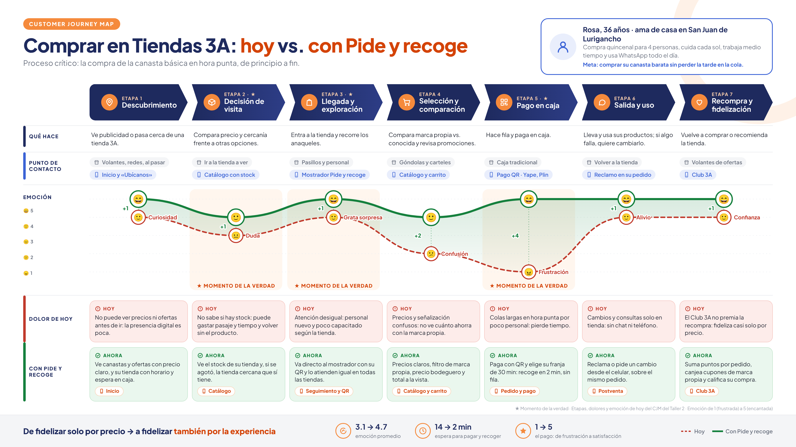

Caso de estudio: Tiendas 3A · «Pide y recoge»
Customer Journey Map, touchpoints y formularioEstructura del CJM por fases y áreas · Noviembre 2026
Prototipo académico con datos simulados · no afiliado a ninguna cadena comercial

Las 7 etapas del journey se agrupan en 3 fases. En cada fase, Marketing, Operaciones y RRHH cumplen un rol para que la experiencia «Pide y recoge» sea coherente.
El panel de tienda es el punto común: Marketing publica stock, ofertas y canastas; Operaciones prepara cada pedido según su franja y responde reclamos; RRHH asegura personal capacitado en hora punta. Cada semana revisan juntos los mismos tres indicadores: tiempo en cola, NPS por tienda y recompra del Club 3A.
14 touchpoints en las 3 fases. Los resaltados son los momentos de la verdad del CJM: decisión de visita, llegada a la tienda y pago.
Se entera de la tienda por el barrio.
Tiendas cercanas, horario y espera en caja de hoy.
Catálogo semanal y avisos de reposición.
Sabe qué hay antes de salir; si se agotó, ve otra tienda cercana.
Su compra semanal o quincenal en un toque.
Señalética clara y precios iguales a la app.
Elige su franja de 30 min y paga sin hacer fila.
Sigue para quien no usa la app; se descongestiona.
Recibido, preparando y «listo para recoger».
Muestra su QR y recoge en 2 min.
Orienta, repone y abre caja si se forma cola.
Reporta desde el celular; respuesta en 24 h.
Califica de 0 a 10 y deja un comentario.
Puntos por pedido y cupones en marca propia.
14 touchpoints: 9 digitales, 4 físicos y 1 humano.
11 son nuevos con Pide y recoge (los 3 momentos de la verdad también).
3 momentos de la verdad: decisión de visita (stock), llegada (mostrador) y pago.
10 preguntas, una por proceso del journey, para recoger puntos fuertes y puntos de dolor.
Por WhatsApp o con el QR de la boleta. Toma 2 minutos.
Respuestas de 4 a 5 = fortaleza · de 1 a 2 = dolor.
¿Cómo te enteraste de la tienda donde compras?
Antes de salir, ¿pudiste saber si estaban los productos que buscabas?
Del 1 al 5, ¿qué tan claros te parecieron los precios y las ofertas?
¿Cuánto tiempo esperaste para pagar o recoger?
¿Cómo pagaste y qué tan cómodo fue? (1 a 5)
¿Tu pedido estuvo listo y completo en la franja que elegiste?
Del 1 al 5, ¿cómo te atendió el personal de la tienda?
Si tuviste un problema con tu compra, ¿lo resolvimos?
Del 0 al 10, ¿qué tan probable es que recomiendes Tiendas 3A a un familiar o vecino?
¿Qué fue lo mejor de tu compra y qué deberíamos mejorar?